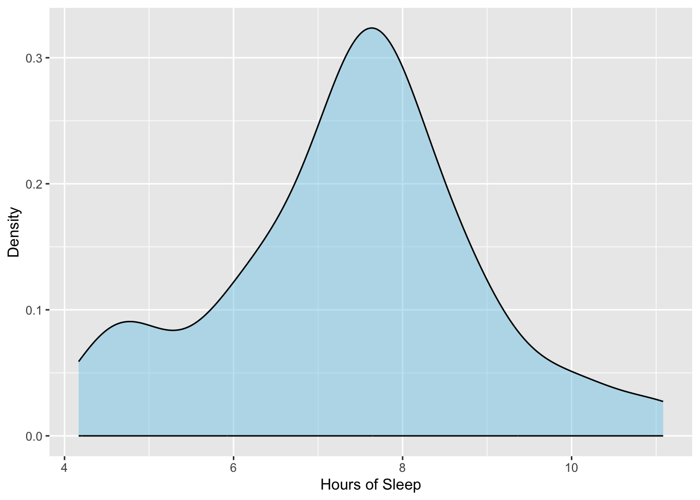
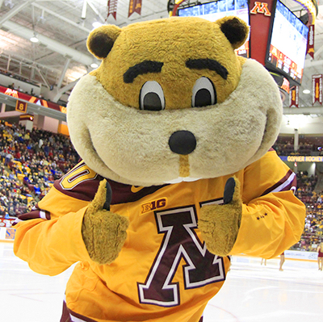
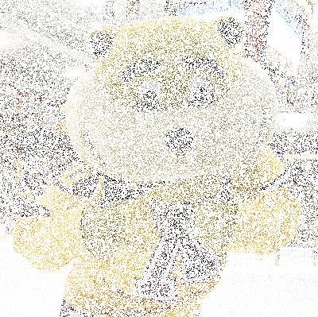
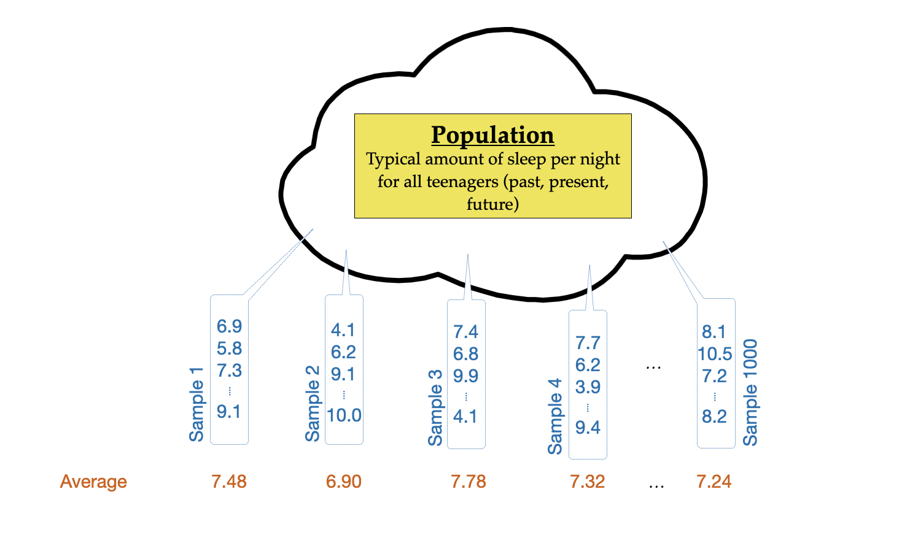
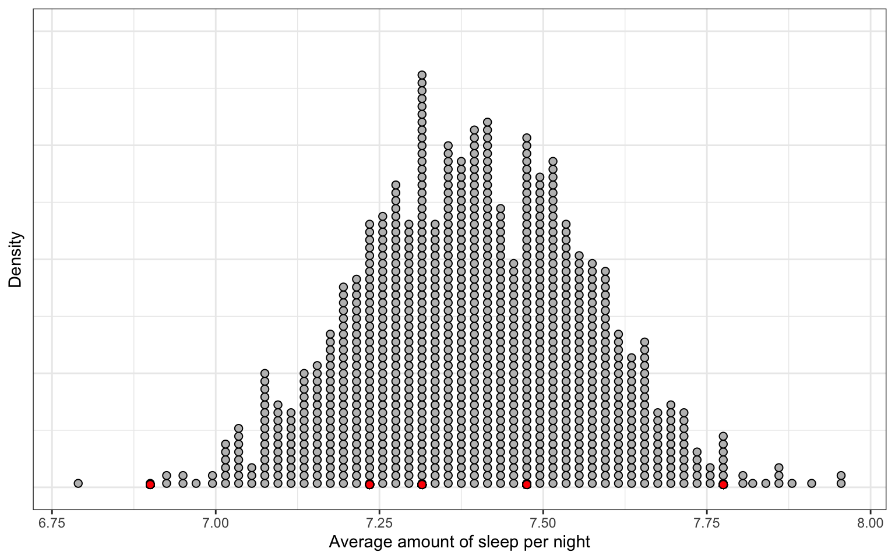
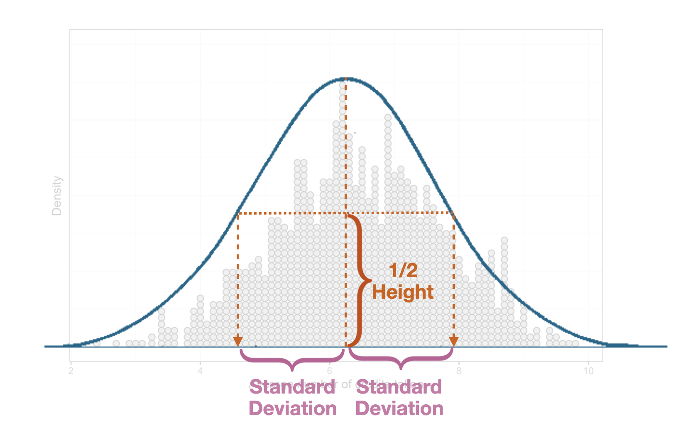

library(ggformula)
library(mosaicCore)
library(tidyverse)
# Import data
teen_sleep <- read_csv("https://raw.githubusercontent.com/zief0002/epsy-5261/main/data/teen-sleep.csv")
# View data
teen_sleep5 Case Study: Teen Sleep
According to the National Institutes of Health (2021), quality sleep is a key factor in health and well-being. Sleep has been linked to risk of several diseases such as heart disease, stroke, and dementia. It is also been linked to cognition and mental well-being. For teenagers, sleep is even more important as they are experiencing “second developmental stage of cognitive maturation” (Johns Hopkins University, 2023). The research, which suggests teens need, on average, between 9 and 9 1/2 hours of sleep a night, indicates that not only is this amount of sleep necessary for teen’s cognitive development, but also helps reduce the risk of depression and drug use.
In this case study we will use the data in teen-sleep.csv to determine whether teens are getting the recommended 9 hours of sleep a night. These data include the bedtime, wake-up time, and hours slept for a sample of \(n=75\) American teens in Grades 9–12.
We will prepare for the analysis by loading in the {tidyverse}, {ggformula}, and {mosaicCore} libraries and importing the teen sleep data.
5.1 Descriptive Analysis
After importing the data, we will start by exploring the data. Because we are interested in the hours of sleep teens are getting, we will visualize and numerically describe the hrs_sleep attribute.
# Create density plot
gf_density(
~ hrs_sleep, data = teen_sleep,
color = "black",
fill = "skyblue",
xlab = "Hours of Sleep",
ylab = "Density"
)
# Compute numerical summaries
df_stats(~hrs_sleep, data = teen_sleep)
Describing the amount of sleep teens get we might say:
There is a great deal of variation in the hours of sleep that teens get, with some teenagers getting as much as 11 hours of sleep a night, and others getting as little as 4 hours. A typical teen in the sample gets around 7.5 hours of sleep a night. The SD of 1.5 further indicates most teens get between 6 and 9 hours of sleep a night. There is some evidence in the density plot that suggests the distribution of teen sleep may be bimodal, with a much smaller group of teens averaging around 5 hours of sleep a night.
Based on the visual and numerical evidence, we might conclude that, on average, teens are not getting the recommended 9 hours of sleep a night. The key words here in the conclusion are: “on average”. Statistically, we are saying that a typical teen in the distribution (around 7.5 hours of sleep a night) is not getting the recommended 9 hours of sleep a night. It is important to note that we are not talking about individual teens here (some of the teens in the sample are getting 9 or more hours of sleep a night), but rather are asking the question: on average, are teens getting the recommended 9 hours of sleep a night.
Using this interpretation, we can definitively say that the 75 teens in our sample are, on average, not getting 9 or more hours of sleep a night—they are averaging 7.4 hours of sleep a night (based on the sample mean). Our research question, however is not whether these 75 teens are getting the recommended amount of sleep, but whether teens more generally are getting the recommended 9 hours of sleep a night. To answer this requires that we infer beyond our sample of 75 teens to the broader population of teens from which they were sampled from.
5.2 Statistical Inference: Using Sample Data to Draw Conclusions about the Population
In many studies, the primary interest is to learn about one or more characteristics about a population. Although these characteristics must be estimated from sample data, the sample (and thus the estimate computed from the sample) form an incomplete picture of the population. As an example, consider the pictures of Goldy Figure 5.3. In the left-hand panel every pixel of the picture is shown. In the right-hand panel, we have only shown a random sample of the pixels. While the picture on the right is incomplete, we can still infer what the original picture looks like. This idea is similar to how we can make inferences about a population from a subset of cases (i.e., a sample).


The issue with using the sample data to draw a conclusion about the larger population is that the sample is an incomplete picture of the larger population. This means that any estimate we obtain from the sample needs to account for this incompleteness or uncertainty. For example, in the right-hand panel of Figure 5.3 the incomplete data leads to uncertainty about the actual picture. The information there allows us to make some inferences (e.g., it is a photo of Goldy), but there is still uncertainty because some of the pixels are not shown.
In our example of determining whether teenagers are sleeping 9 or more hours, we used sample data to obtain an estimate of the average amount of sleep teens are getting in a night, namely 7.4 hours of sleep a night. Because we based this estimate on incomplete data (i.e., from a sample) there is uncertainty associated with this estimate—7.4 hours is probably not the average number of hours ALL teens sleep a night. Quantifying the uncertainty gives us a better estimate. For example, this quantification might suggest that teens sleep, on average, between 6.0 and 8.8 hours a night.
5.2.1 Sources of Uncertainty
Why does incomplete data lead to uncertainty? It turns out, there are several sources of uncertainty, the most common of which are:
- Sampling variation (a.k.a, sampling error); and
- Measurement variation (a.k.a., measurement error)
Sampling variation is the idea that different samples that can be drawn from the same population produce different estimates.
For example, what if if we had used a different sample of 75 teenagers. The amount of sleep these teens got would likely be different than our original 75 teens, which means that their average amount of sleep (the sample mean) would also be different than the original average of 7.4. This tells us that the uncertainty in the estimate is a function of the random nature of the sampling.
Another source of uncertainty in estimates is imperfect measurement, or measurement error. This arises most often when the constructs we are measuring can not be directly observed (i.e., they are latent) and we have to use proxies of these construct in our analysis. For example, the way the researchers in the original study measured the amount of sleep was via a self-report survey; they asked teens and their parents to indicate the teen’s typical bedtime and wake-up time using a drop down menu that gave times in 5 minute increments. Self-reporting, even with the parent responses as a check, are likely imperfect measures of the amount of sleep a teen gets. Further, if we compute a numerical summary, say the mean, from scores that are imperfect measures, then that mean will also be an uncertain estimate. The uncertainty in the sample estimate is now not only due to sampling error, but also because of the measurement error inherent in its computation.
In practice, despite these being very different sources of variation, measurement error and sampling error are often combined and treated as if all of the uncertainty was due to sampling error. This
EPsy 5261, we will focus on quantifying uncertainty via estimating the sampling variation/sampling error. You can learn more about how to compute and account for measurement error in courses like EPsy 5221: Priciples of Educational and Psychological Measurment.
5.3 Uncertainty Due to Sampling Error
To give you a better sense of the uncertainty in an estimate that is due to sampling error and the methods we use to quantify sampling error, consider the following thought experiment: Imagine the population of amount of sleep per night taken for every teenager (past, present, and future). There would be an infinite number of these values, but theoretically, we could plot all of these values, and compute numerical summaries such as the mean and standard deviation of these values. (The mean of this distribution is what we are trying to estimate using our sample data.) The conceptual idea of estimating sampling variation is that we are going to draw a sample of 75 students and compute the mean amount of sleep for that sample. Then we are going to repeat this process again, and again, each time drawing 75 observations and computing the mean amount of sleep. Figure 6.1 shows a visual depiction of this thought experiment that was carried out 1000 times.

The 1000 sample means can then be plotted, and we can compute a numeric summary of the variability in the distribution of sample means.

In Figure 5.5 each observation plotted in the distribution is one of the means from a sample drawn in our thought experiment. For example, the red dots indicate the five sample means reported in Figure 6.1, namely 7.48 (mean of Sample 1), 6.90 (mean of Sample 2), 7.78 (mean of Sample 3), 7.32 (mean of Sample 4), and 7.24 (mean of Sample 1000). When the cases in a distribution are numerical summaries, we call that distribution a sampling distribution. The distribution in Figure 5.5 is a sampling distribution of the mean, indicating that the numerical summaries being plotted are means.
Remember that our purpose for producing this distribution is to summarize the variation in the mean values, that is, we want to produce a numerical summary of the variation in the sampling distribution of the means shown in Figure 5.5. This distribution is approximately normal (unimodal and symmetric), so the standard deviation will be a good summary of the variation in this distribution.
If you have a distribution that is unimodal and symmetric, you can estimate the standard deviation by determining the halfway point of the height of the middle of the distribution. You can then follow that out to either side of the distribution and that width is a good guess for the standard deviation.

In the sampling distribution, in Figure 5.5, we estimate the standard deviation to be approximately 0.2. Because this standard deviation is quantifying the variability in a distribution of summary statistics, we refer to it as a standard error (SE).
Recall that each of the samples were randomly sampled from the same population and that the sample mean is a guess for the value of the population mean—the average amount of nightly sleep for ALL teens. Since the only source of variation in the sampling distribution is sampling error (that is, the only reason the sample means are different is that different teens were chosen to be a part of each sample), the SE is a quantification of the uncertainty due to sampling error we expect in our estimate. Based on a typical value in the distribution of about 7.4, and using our SE of 0.20, we can say:
We think that the mean amount of sleep each night for ALL teens is between 7.2 and 7.6. This range of values captures the uncertainty in the estimate (the sample mean) that is due to sampling error.
5.4 Looking Ahead
In practice, you do not draw 1000 samples; you have one sample of data that you have collected. So one of the things we will need to learn is how to produce a standard error based on only one sample of data. You will also learn about how to use the standard error in hypothesis tests evaluate how well data conforms to particular quantitative hypotheses we may have about the population. Finally, you will learn about a theoretical result in statistics known as the Empirical Rule, which will help us put probabilistic statements around the quantification of uncertainty to produce confidence intervals.
5.5 References
Johns Hopkins University. (2023). Teenagers and sleep: How much sleep is enough? https://www.hopkinsmedicine.org/health/wellness-and-prevention/teenagers-and-sleep-how-much-sleep-is-enough
National Institutes of Health. (2021). Good sleep for good health: Get the rest you need. In NIH News in Health. https://newsinhealth.nih.gov/2021/04/good-sleep-good-health